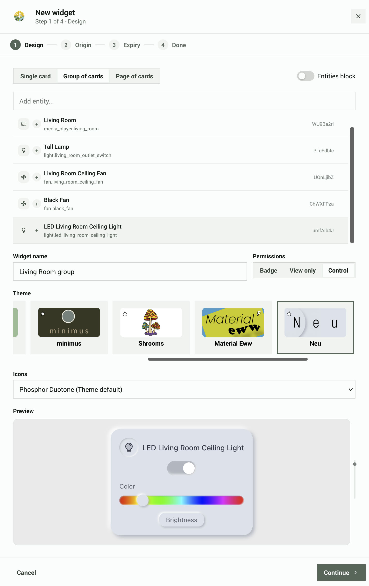
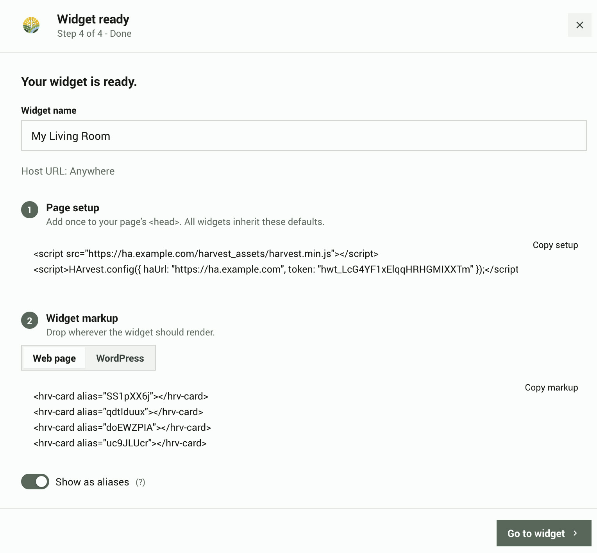

Quick setup
Create a widget for one of your smart home devices, then put it on a webpage. This takes about five minutes and assumes HArvest is already installed.
Create your first widget
From the HArvest panel dashboard, click + Create Widget in the bottom-right corner. This opens the four-step wizard.
Step 1 - Design
Search for the entity you want to embed. The search matches entity IDs and friendly names, for example "Bedroom light" or light.bedroom_main.
For a first widget, keep the default Group of cards mode and select one entity. You can add more cards or switch to Single card or Page of cards later.
- Click an entity to add it.
- Give the widget a name for your own reference. Visitors to your page never see it.
- Choose View only if visitors should only see state, or Control if they should be able to interact with the device.
The live preview updates in real time as you change the permission level or theme.
You can also choose Badge or Page mode, add companion entities with the [+] button, and select a theme. All of these can be changed later from the widget detail screen.

Step 2 - Set origin
Specify which website is allowed to use this widget. This prevents another browser-based website from reusing the embed code. Non-browser tools can forge the Origin header, so the token's entity scope remains the primary security boundary.
Enter your site URL (e.g. https://mysite.com) or choose Any website if you don't need this restriction. For widgets that allow control, setting an origin is strongly recommended.
Step 3 - Set expiry
Choose when the widget expires: never, 30 days, 90 days, 365 days, or a custom date. An expired widget can be renewed from the panel at any time.
The Advanced section has additional options you can skip for now:
- Access schedule - limit the widget to specific days and hours (e.g. business hours only).
- IP restrictions - limit connections to specific network ranges.
- HMAC signing - requires a valid signature in addition to the token ID. It helps when a token ID leaks without its paired secret, but the secret remains visible to page visitors. See the security page for details.
Click Generate to create the widget.
Step 4 - Get the code
The wizard shows a ready-to-paste code snippet. Use the tabs to switch between plain HTML and WordPress shortcode format.
There is also a toggle to use aliases instead of real entity IDs. An alias is a short random code like dJ5x3Apd that stands in for light.bedroom_main, so visitors cannot see your actual Home Assistant entity IDs in the page source.
Copy the snippet and paste it into your page. That's it.

Embed on a plain HTML page
The snippet has two parts. First, a one-time setup block that loads the widget script and tells it where your Home Assistant instance is. Second, one <hrv-card> tag for each entity you want to show.
<!-- Part 1: Load the script and connect to your HA instance (once per page) -->
<script src="https://myhome.duckdns.org/harvest_assets/harvest.min.js"></script>
<script>
HArvest.config({
haUrl: "https://myhome.duckdns.org",
token: "hwt_a3F9bC2d114eF5A6b7c8dE",
});
</script>
<!-- Part 2: Place cards anywhere in your page -->
<hrv-card entity="light.bedroom_main"></hrv-card>
<hrv-card entity="sensor.outdoor_temp"></hrv-card>The setup block only needs to appear once, no matter how many cards you add. Place <hrv-card> tags anywhere in the page body where you want a widget to appear.
The script URL points at your Home Assistant instance. The HArvest integration serves the widget bundle directly at /harvest_assets/harvest.min.js. The widget always matches the running integration version: update HArvest via HACS and every embedded widget picks up the new bundle on the next page load. You don't need to upload the widget separately, configure a CDN, or keep versions in sync.
The scheme of your HA URL must match the scheme of the page the widget is embedded on. An https:// page cannot connect to an http:// HA URL: browsers block the insecure ws:// WebSocket as mixed content, and the widgets may not load at all. Use https:// for both (an HTTPS page with an HTTPS HA URL), or http:// for both on a trusted private network. If your widgets stay blank with no errors on the card, check that the page and the HA URL use the same scheme.
The HArvest.config() call sets a page-level default. If you need cards from different tokens on the same page, you can set token and ha-url directly on individual cards or card groups instead. See token configuration levels in the widget reference.
Embed on WordPress
If you use WordPress, the wizard generates a shortcode instead of raw HTML. A shortcode is a small tag that WordPress replaces with the widget when the page loads.
[harvest token="hwt_a3F9bC2d114eF5A6b7c8dE" entity="light.bedroom_main"]Paste it into any editor, block, widget, or page-builder module that processes WordPress shortcodes. The Classic Editor is one option. The HArvest WordPress plugin loads the widget script, adds the Home Assistant origins to its Content Security Policy header, and handles light/dark mode matching.
If shortcode processing is unavailable, select the Web page output instead and place its hrv-mount element in a raw HTML or code context.
The plugin needs to be installed and configured with your HA URL before shortcodes will work. Download the latest release zip from GitHub Releases and find harvest.zip in the wordpress/ folder. See the WordPress setup page for the full install process.
The Dashboard Converter can turn an existing HA dashboard into an HArvest HTML page. It reads the dashboard structure, creates the required widgets, and generates a complete HTML file with supported views, sections, cards, and badges. Styling and unsupported card behavior are not copied exactly. Open it from the Widgets tab in the HArvest panel.
The Panel guide covers the rest of the HArvest panel: display settings, security options, and activity logs. The Widget reference has all embed options and the JavaScript API.